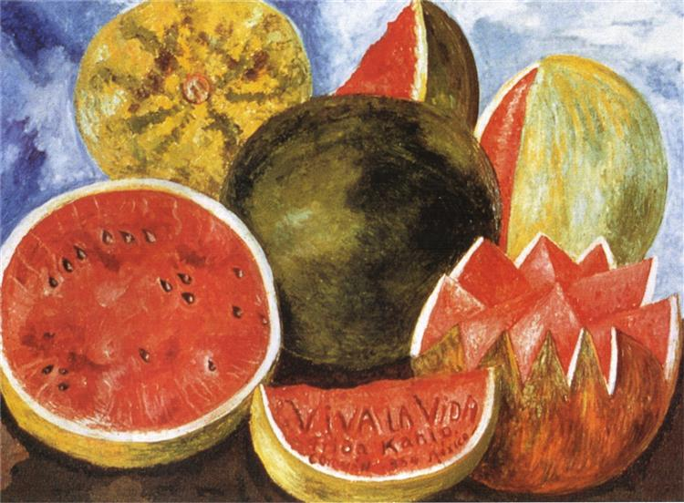

"The Aim of Art is not to represent the outward appearance of things , but their inward significance."

Viva la Vida, Watermelons (1954) is the final painting by Frida Kahlo, completed shortly before her death at age 47. It is a vibrant, red-toned still life of watermelons that features the inscription "Viva la Vida" (Long Live Life) on a central slice, serving as a powerful, defiant celebration of life despite her intense chronic pain, physical deterioration, and terminal illness